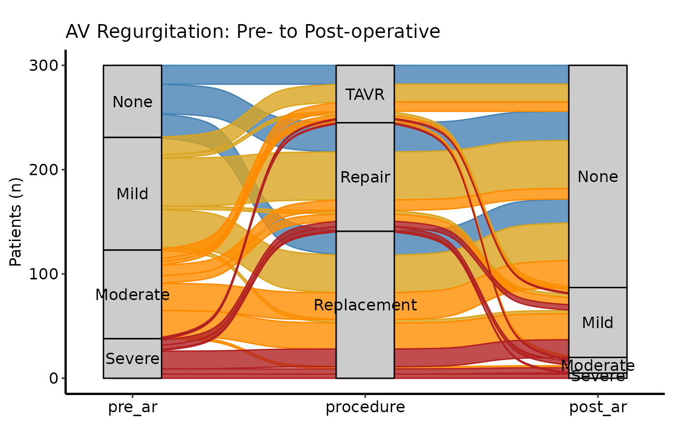

Validates a wide alluvial-format data frame and returns an
hvti_alluvial object. Call plot.hvti_alluvial on the
result to obtain a bare ggplot2 alluvial diagram that you can
decorate with colour scales, axis labels, and hvti_theme.
Arguments
- data
A data frame in wide alluvial format: one row per axis-value combination, a numeric weight column, and one column per axis.
- axes
Character vector of column names to use as axes, in left-to-right display order. Minimum two columns.
- y_col
Name of the numeric weight column (counts or proportions). Default
"freq".- fill_col
Name of the column to map to the flow fill and colour aesthetics, or
NULLfor a single fill. DefaultNULL.- axis_labels
Character vector of axis labels for the x-axis, the same length as
axes. Defaults toaxes(column names).
Value
An object of class c("hvti_alluvial", "hvti_data"):
$dataThe validated input data frame.
$metaNamed list:
axes,y_col,fill_col,axis_labels,n_axes,n_obs.$tablesEmpty list.
Examples
dta <- sample_alluvial_data(n = 300, seed = 42)
axes <- c("pre_ar", "procedure", "post_ar")
al <- hvti_alluvial(dta, axes = axes, y_col = "freq",
fill_col = "pre_ar")
al # prints axes, obs count
#> <hvti_alluvial>
#> Axes (3) : pre_ar → procedure → post_ar
#> Weight col : freq
#> Fill col : pre_ar
#> N rows : 25
plot(al) +
ggplot2::scale_fill_manual(
values = c(None = "steelblue",
Mild = "goldenrod",
Moderate = "darkorange",
Severe = "firebrick"),
name = "Pre-op AR"
) +
ggplot2::scale_colour_manual(
values = c(None = "steelblue",
Mild = "goldenrod",
Moderate = "darkorange",
Severe = "firebrick"),
guide = "none"
) +
ggplot2::labs(y = "Patients (n)",
title = "AV Regurgitation: Pre- to Post-operative") +
hvti_theme("manuscript")
#> Warning: Some strata appear at multiple axes.
#> Warning: Some strata appear at multiple axes.
#> Warning: Some strata appear at multiple axes.
